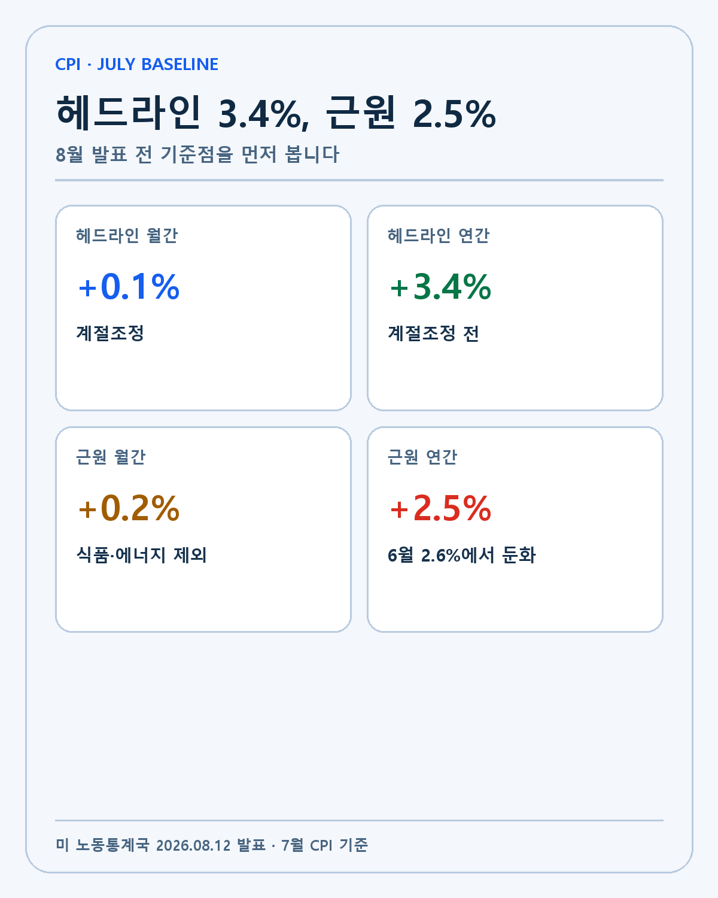
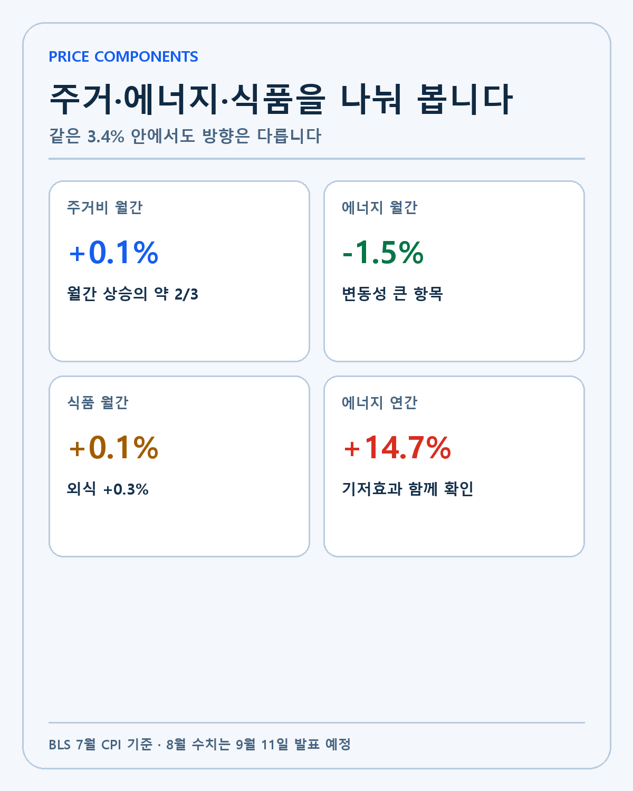
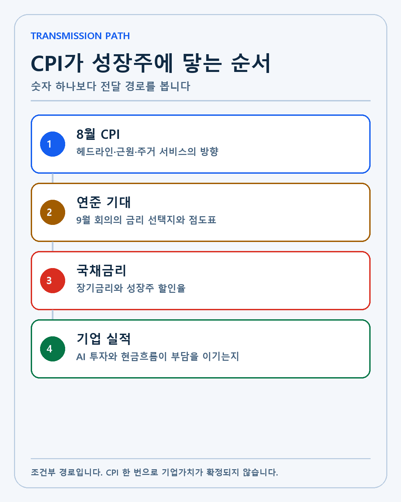
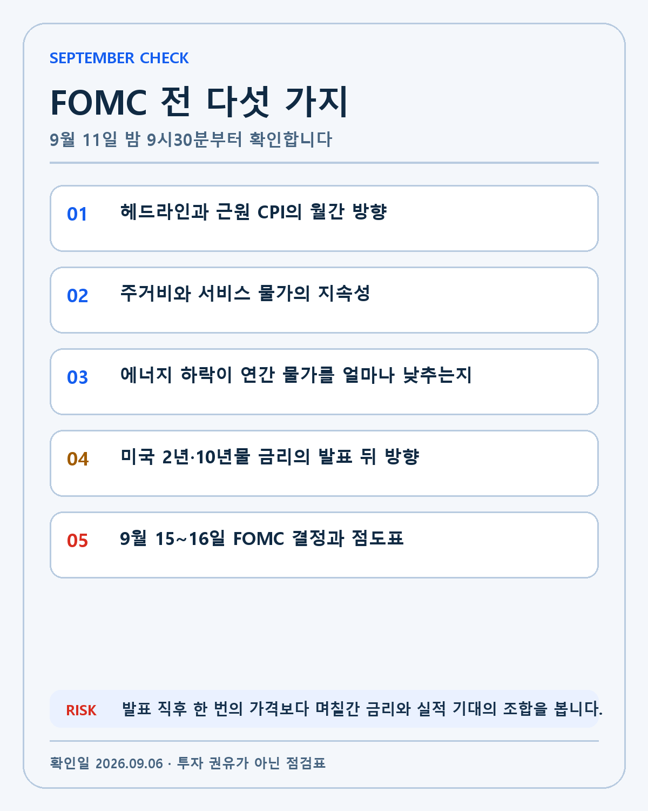

US CPI · DEEP RESEARCH
미국 8월 CPI 프리뷰: 9월 FOMC 앞에서 물가·금리·성장주를 읽는 방법
9월 11일 발표되는 미국 8월 CPI를 7월 기준선, 주거·서비스·에너지, 국채금리와 성장주 할인율의 경로로 분석합니다.
2026년 9월 미국 금융시장의 다음 분기점은 9월 11일 발표되는 8월 소비자물가지수입니다. 8월 고용보고서가 노동시장의 복원력을 보여 준 직후이기 때문에, 이번 CPI는 단순한 월간 통계 이상의 의미를 가집니다. 고용이 버티는 상황에서 물가가 다시 넓게 오르는지, 아니면 경제활동을 크게 훼손하지 않고 기초 물가 압력이 낮아지는지를 확인하는 자료입니다.
이 보고서는 아직 공개되지 않은 8월 CPI를 예측하지 않습니다. 확인된 7월 수치와 공식 발표 일정에서 출발해, 발표 뒤 어떤 항목을 어떤 순서로 읽어야 하는지 정리합니다. 헤드라인 숫자와 근원물가, 주거비와 서비스, 에너지, 국채금리, 연준의 점도표를 하나의 판단 체계로 연결하는 것이 목적입니다.
먼저 결론: 이번 CPI는 숫자보다 조합이 중요합니다
8월 CPI에서 가장 중요한 것은 연간 상승률 하나가 아닙니다. 전체 CPI와 근원 CPI의 월간 방향, 주거비와 서비스 물가의 폭, 에너지의 기저효과, 발표 뒤 미국 2년물·10년물 금리의 움직임을 함께 봐야 합니다. 같은 헤드라인 수치가 나와도 세부 구성에 따라 연준과 성장주에 미치는 의미가 달라질 수 있습니다.
현재 기준점은 7월 전체 CPI 전월 대비 0.1%, 전년 대비 3.4%, 근원 CPI 전월 대비 0.2%, 전년 대비 2.5%입니다. 이 수치는 미국 노동통계국의 7월 CPI 발표에서 확인할 수 있습니다. 8월 실제 수치는 9월 11일 오전 8시30분 미 동부시간, 한국시간 밤 9시30분에 공개됩니다. 하루 전 같은 시간에는 8월 생산자물가지수가 나옵니다.
9월 FOMC는 15~16일에 열립니다. CPI 발표와 정책 결정 사이의 시간이 짧습니다. 연준 위원들은 고용과 물가를 모두 본 뒤 금리 경로와 전망을 제시할 수 있습니다. 시장도 CPI 발표 직후 첫 가격뿐 아니라 FOMC까지 이어지는 국채금리와 기대금리의 방향을 다시 평가할 가능성이 큽니다.
확인된 일정과 분석 기준
BLS 2026년 9월 공식 일정은 8월 PPI를 9월 10일, CPI를 9월 11일 각각 오전 8시30분에 배정하고 있습니다. 미국 동부지역은 서머타임 기간이므로 한국에서는 두 지표를 밤 9시30분에 확인하게 됩니다. 연준 회의 일정에서는 9월 회의를 15~16일로 확인할 수 있습니다.
| 사건 | 미국 동부시간 | 한국시간 | 분석 목적 |
|---|---|---|---|
| 8월 PPI | 9월 10일 08:30 | 9월 10일 21:30 | 생산단계 비용과 파이프라인 압력 |
| 8월 CPI | 9월 11일 08:30 | 9월 11일 21:30 | 소비자가격과 기초 물가 추세 |
| 9월 FOMC | 9월 15~16일 | 9월 16~17일 | 금리 결정·전망·점도표 |
시점 차이도 중요합니다. PPI는 생산단계 가격을 보여 주지만 CPI와 품목 구성과 가중치가 다릅니다. PPI가 높았다고 CPI가 같은 폭으로 오르는 것도 아니며, 기업이 원가 상승을 소비자 가격에 모두 전가할 수 있다는 뜻도 아닙니다. PPI는 선행 참고자료이고 CPI는 별도의 소비자가격 지표입니다.
7월 기준선에서 읽어야 할 네 가지

첫째, 7월 전체 CPI의 월간 상승률은 0.1%였습니다. 6월에는 0.4% 하락했기 때문에 7월의 작은 반등만으로 추세를 판단하기 어렵습니다. 월간 수치는 최근 변화를 빠르게 보여 주지만 에너지와 계절조정의 영향을 크게 받을 수 있습니다.
둘째, 전체 CPI의 연간 상승률은 3.4%였습니다. 6월의 3.5%보다 낮아졌지만 여전히 연준의 장기 물가 목표인 2%와는 거리가 있습니다. CPI와 연준이 주로 참고하는 개인소비지출 물가지수는 서로 다른 지표이므로 3.4%와 정책 목표를 기계적으로 비교해서는 안 됩니다. 다만 소비자가 체감하는 가격 수준과 인플레이션 경로를 보여 주는 중요한 참고자료입니다.
셋째, 근원 CPI는 월간 0.2%, 연간 2.5%였습니다. 식품과 에너지를 제외한 근원지표는 변동성이 큰 두 품목의 영향을 줄여 기초 압력을 보려는 목적이 있습니다. 그렇다고 식품과 에너지가 중요하지 않다는 뜻은 아닙니다. 가계가 실제로 지출하는 품목이며 기대인플레이션과 소비여력에 영향을 줍니다.
넷째, 7월에는 전체와 근원 연간 상승률이 모두 전월보다 낮아졌습니다. 이것은 둔화라는 사실을 보여 주지만 한 달의 변화입니다. 8월에 근원 월간 상승률이 다시 높아지고 서비스 품목의 상승 범위가 넓어진다면, 연간 둔화만 보고 안심하기 어렵습니다.
구성 항목: 주거비와 서비스가 핵심인 이유
7월 주거비는 월간 0.1% 올랐고 전체 월간 상승분의 약 3분의 2를 차지했습니다. 주거비는 CPI에서 비중이 크며 실제 시장 임대료 변화가 통계에 반영되는 데 시차가 있습니다. 한 달의 0.1%가 낮아 보여도 여러 달 이어지는지 확인해야 합니다.
서비스 물가는 노동집약적 성격이 강한 품목을 포함합니다. 고용이 견조하고 임금 상승이 유지되면 서비스 가격이 천천히 내려갈 수 있습니다. 그러나 임금과 서비스 가격 사이의 인과는 산업별 생산성과 수요, 마진에 따라 다릅니다. 임금 상승률 하나를 서비스 물가의 직접 원인으로 단정하지 않습니다.
에너지는 7월에 전월 대비 1.5% 하락했지만 전년 대비로는 14.7% 상승했습니다. 월간 하락과 높은 연간 상승률이 함께 나타나는 이유는 비교 기준과 기저효과가 다르기 때문입니다. 8월 에너지가 다시 오르면 전체 CPI가 근원보다 빠르게 높아질 수 있고, 하락이 이어지면 헤드라인을 낮추는 힘이 될 수 있습니다.
식품은 월간 0.1%, 연간 3.0% 올랐습니다. 집에서 먹는 식품은 7월에 0.1% 내렸지만 외식은 0.3% 상승했습니다. 가계의 체감물가와 소비구조를 볼 때 전체 식품 숫자보다 집밥과 외식의 차이를 보는 편이 유용합니다.

CPI에서 금리와 성장주까지 이어지는 네 단계
첫 단계는 실제 CPI 발표입니다. 헤드라인과 근원의 월간·연간 수치, 예상 대비 차이, 주거와 서비스의 폭을 확인합니다. 시장 예상보다 높거나 낮다는 표현만으로는 부족합니다. 어떤 품목이 차이를 만들었는지 알아야 지속성을 판단할 수 있습니다.
두 번째는 연준 기대입니다. 정책금리에 민감한 2년물 국채금리와 선물시장의 기대가 CPI 이후 어떻게 변하는지 봅니다. 연준은 한 지표로 결정하지 않으며 고용, 물가, 금융여건과 위험 균형을 함께 평가합니다. 강한 고용과 높은 기초 물가가 결합하면 긴축 선택지를 오래 유지할 수 있고, 물가가 둔화하면 경제활동을 훼손하지 않고도 금리 부담을 낮출 여지가 생깁니다.
세 번째는 장기금리와 할인율입니다. 10년물 금리는 정책 기대 외에도 장기 성장률, 인플레이션, 국채 수급, 기간 프리미엄의 영향을 받습니다. 성장주의 미래 현금흐름을 현재가치로 환산할 때 장기금리가 높아지면 같은 현금흐름의 평가액이 낮아질 수 있습니다. 아직 이익이 먼 기업일수록 민감도가 높습니다.
네 번째는 기업 실적입니다. 금리가 기업의 기술 경쟁력, 고객 계약, 시장점유율을 직접 바꾸는 것은 아닙니다. 현재 매출과 현금흐름이 빠르게 늘어나는 기업은 할인율 상승을 이익 성장으로 상쇄할 수 있습니다. 반대로 자금조달에 계속 의존하는 기업은 높은 자본비용의 영향을 크게 받을 수 있습니다.

이 네 단계를 한꺼번에 CPI가 높으면 주가 하락이라는 문장으로 줄이면 중요한 차이를 놓칩니다. CPI 발표 당일 나스닥이 내렸다가 회복하거나, 국채금리와 주가가 같은 방향으로 움직일 수도 있습니다. 가격 반응은 포지션, 예상치, 유동성, 개별기업 뉴스가 함께 만든 결과입니다.
세 가지 시나리오와 무효화 조건
시나리오 A: 성장 친화적 둔화
근원 월간 상승률이 낮아지고 주거·서비스의 상승 범위도 좁아지는 경우입니다. 고용이 무너지지 않은 상태에서 물가가 둔화하면 연준은 경기와 물가 사이에서 선택할 여유를 얻습니다. 2년물과 10년물이 안정되고 기업의 실적 추정치가 유지된다면 성장주에 우호적인 조합이 될 수 있습니다.
이 시나리오는 에너지 하락만으로 헤드라인이 낮아지고 근원 서비스가 다시 높아질 때 무효화됩니다. 발표 직후 금리가 내렸더라도 며칠 뒤 되돌림이 크다면 한 번의 반응으로 판단하지 않습니다.
시나리오 B: 혼합 신호
전체 CPI와 근원이 서로 다른 방향을 보이거나, 월간은 높지만 연간은 기저효과로 낮아지는 경우입니다. 국채금리도 방향성이 약할 수 있습니다. 이때는 지수의 한 방향 베팅보다 실적과 현금흐름이 강한 기업과 자금소진이 큰 기업의 차이가 커질 가능성을 봅니다.
혼합 신호에서는 정기 투자 원칙을 유지하되 가격을 무시하지 않습니다. 같은 기술주라도 현재 이익의 비중, 부채 만기, 추가 증자 필요성에 따라 금리 민감도가 달라집니다. 기업별 기대수익률을 다시 계산하는 구간입니다.
시나리오 C: 기초 물가 재가속
근원 월간 수치가 높아지고 주거와 서비스 품목이 넓게 오르며 2년물·10년물이 함께 상승하는 경우입니다. 9월 FOMC에서 높은 금리 경로가 확인되면 아직 외부 자금이 많이 필요한 성장기업의 평가와 조달비용에 부담이 커질 수 있습니다.
그러나 이 시나리오도 기술 해자가 약해졌다는 뜻은 아닙니다. 할인율에 의한 가격 조정과 펀더멘털 훼손을 분리해야 합니다. 계약 취소, 제품 경쟁력 약화, 창업자의 전략 변화가 없다면 단기 금리 변동만으로 장기 논리를 버리지 않습니다.
내 포트폴리오에 적용하는 방식
내 투자 판단의 우선순위는 기술, 해자, 창업자, 성장률, 현금흐름입니다. 엔비디아와 팔란티어는 AI 시대의 핵심 인프라와 소프트웨어 기업으로 보지만, 높은 평가가 붙을수록 금리와 기대수익률을 더 세밀하게 봐야 합니다. 플래닛랩스, 로켓랩, 조비 같은 기업은 미래 기술의 중요성이 크지만 자본투자와 자금조달의 영향을 더 크게 받습니다.
CPI가 높다고 모든 종목의 비중을 동시에 줄이지 않습니다. 먼저 국채금리가 며칠간 높은 수준을 유지하는지, 이후 실적 추정치가 낮아지는지, 기업의 고객 수요와 현금흐름이 실제로 약해지는지를 봅니다. 가격만 변하고 펀더멘털이 유지되면 월급날 정기 투자 원칙 안에서 기대수익률을 다시 계산합니다.
반대로 낮은 CPI가 나와도 무조건 추가매수하지 않습니다. 물가 둔화가 경기 침체와 매출 둔화에서 왔다면 금리 하락이 기업 실적 악화를 상쇄하지 못할 수 있습니다. 금리와 실적의 조합을 보는 이유입니다.
발표 당일 기록할 체크리스트

- 발표 전 7월 기준선과 시장 예상치를 별도 기록합니다.
- 발표 직후 전체·근원 CPI의 월간과 연간 수치를 분리합니다.
- 주거비, 서비스, 에너지, 식품에서 차이를 만든 항목을 찾습니다.
- 미국 2년물과 10년물 금리의 5분 반응과 장 마감 반응을 구분합니다.
- 나스닥과 보유기업의 움직임을 같은 원인으로 단정하지 않습니다.
- 9월 FOMC에서 금리 결정과 점도표가 CPI 반응을 확인하거나 뒤집는지 봅니다.
- D+7에 금리와 주가의 방향이 유지됐는지 복기합니다.
이번 프리뷰의 핵심은 예측이 아니라 판단 절차입니다. 아직 8월 CPI는 UNKNOWN입니다. 확인된 7월 수치와 일정에서 출발하고, 발표 뒤 사실을 채운 다음 시나리오를 갱신합니다. 정확한 숫자를 맞혔다는 만족보다 투자 논리가 어떤 조건에서 강화되고 약해지는지 남기는 것이 장기 기록의 목적입니다.
CPI를 읽을 때 자주 생기는 세 가지 오류
첫 번째 오류는 연간 상승률이 낮아지면 물가 수준 자체가 낮아졌다고 생각하는 것입니다. CPI 상승률이 둔화했다는 말은 가격이 이전보다 느리게 오르고 있다는 뜻일 수 있습니다. 이미 높아진 생활비가 과거 수준으로 내려갔다는 뜻은 아닙니다. 가계의 체감과 금융시장의 반응이 다른 이유 중 하나입니다. 시장은 변화율과 정책 경로를 빠르게 반영하지만 가계는 누적된 가격 수준을 부담합니다.
두 번째 오류는 예상치를 공식 사실처럼 쓰는 것입니다. 시장 컨센서스는 조사기관과 집계 시점에 따라 달라질 수 있습니다. 발표 전에 표시되는 예상 숫자는 비교 기준일 뿐 실제 통계가 아닙니다. 이 보고서가 제목에 예상 물가 숫자를 넣지 않은 이유도 같습니다. 발표가 나오면 BLS 원문을 먼저 확인하고 예상 대비 차이는 어느 기관 집계와 비교했는지 따로 적어야 합니다.
세 번째 오류는 계절조정 수치와 비계절조정 수치를 섞는 것입니다. BLS의 월간 변화는 일반적으로 계절조정 기준이고 연간 변화는 계절조정 전 기준으로 제시됩니다. 표에서 두 수치를 같은 열에 놓을 때 기준을 표시하지 않으면 독자가 같은 방식으로 계산된 숫자로 오해할 수 있습니다. 에너지와 의류, 여행처럼 계절성이 큰 항목에서는 특히 주의해야 합니다.
여기에 소수점 반올림도 영향을 줍니다. 월간 0.2%가 여러 달 이어졌다고 단순히 12를 곱해 연간 2.4%라고 결론 내리면 실제 지수의 복리 변화, 계절조정, 반올림 차이를 놓칩니다. 연율 환산은 단기 속도를 이해하는 보조 계산일 뿐 공식 연간 상승률을 대체하지 않습니다.
발표 후 24시간과 7일 뒤를 분리해 기록합니다
발표 직후 5분은 자동매매와 포지션 조정이 집중되는 시간입니다. 이때 보이는 금리와 주가의 방향은 세부 항목을 분석한 장기 판단보다 예상치와의 차이에 대한 빠른 반응일 수 있습니다. 그래서 나는 발표 시각, 첫 5분, 미국 장 마감, 다음 거래일을 나눠 기록합니다.
24시간 안에는 BLS 원문과 표를 읽고 어떤 품목이 전체 변화를 만들었는지 확인합니다. 뉴스 제목이 강조한 숫자와 원문에서 가장 큰 기여 항목이 일치하는지도 봅니다. 연준 인사의 발언이 나오더라도 개인 한 명의 발언과 FOMC 전체 결정을 구분합니다.
7일 뒤에는 CPI 직후의 방향이 유지됐는지 복기합니다. 국채금리가 되돌아왔는지, 성장주의 실적 추정치가 실제로 바뀌었는지, 개별기업 뉴스가 더 큰 영향을 줬는지 확인합니다. 이 단계에서 최초 해석이 틀렸다면 조용히 수정합니다. 예측 적중률을 지키는 것보다 판단 과정을 개선하는 편이 중요합니다.
이 복기 방식은 블로그의 검색 가치에도 도움이 됩니다. 발표 전 프리뷰는 시간과 체크리스트를 제공하고, 발표 후 글은 실제 수치와 달라진 판단을 기록합니다. 같은 키워드를 반복하는 두 글이 아니라 질문과 답의 관계를 만듭니다. 독자는 일정 검색으로 들어와 결과 분석과 다음 정책 일정까지 이어서 볼 수 있습니다.
이 글은 개인 투자 연구이며 특정 자산의 매수·매도를 권유하지 않습니다. 경제지표는 수정될 수 있고 시장가격은 물가 외 여러 변수의 영향을 받습니다. 모든 투자 판단과 책임은 투자자 본인에게 있습니다.
작성 방법
2026년 9월 6일 기준 공식 원문을 우선하고 확인된 사실, 회사 전망, 시나리오와 UNKNOWN을 분리했습니다.
개인 투자 기록이며 특정 종목이나 금융상품의 매수·매도를 권유하지 않습니다.